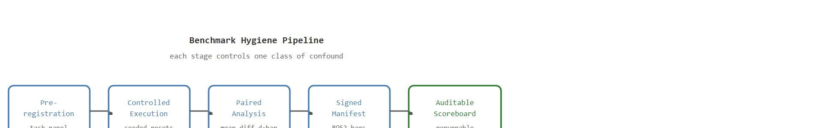
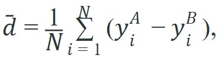

For Real-world evaluation hygiene; benchmark design, a benchmark conclusion survives reruns only when the panel, seed policy, exclusion rules, and raw episode artifacts are inspectable.
An Evaluation Methodologist
Two manipulation policies run on the same robot one week apart. The first runs on a freshly calibrated camera and a full battery; the second runs after a lens smudge and six hours of cycling. The benchmark reports a 15% performance gap. Which policy is actually better? Nobody knows, because the protocol never controlled for those variables. As embodied AI moves from controlled labs into hospitals, warehouses, and homes, sloppy evaluation hygiene is no longer an academic nuisance: it is how overconfident systems reach deployment. This section gives you the tools to design benchmarks that are honest, reproducible, and genuinely informative about real-world capability.
This section assumes familiarity with task suite construction from section 12.4 and with the success-rate metrics defined in section 52.2. The benchmark governance principles introduced here are extended in Chapter 55, where evaluation artifacts become part of release infrastructure, and they recur in Part XII alongside deployment monitoring and incident response.
As Figure 52.6.1 illustrates, a physical benchmark protocol is far more than a list of task labels: it bundles reset rules, operator instructions, calibration checks, and audit trails. Real-world evaluation hygiene; benchmark design matters because evaluation choices rewrite the scientific claim. If the metric drops time, energy, or safety terms that the deployment team cares about, the benchmark no longer matches the real decision. A benchmark that cannot be rerun identically by a second lab is not a benchmark: it is a private opinion expressed in robot-hours. Figure 52.6.2 traces how these controls chain together as a pipeline, and how a single uncontrolled stage corrupts every result downstream.
Reproducibility and construct validity are two different failure modes, and a benchmark can pass one while failing the other. Reproducibility asks whether a second lab gets the same number back; construct validity asks whether that number measures the capability you actually care about. A concrete construct-validity check: if a warehouse-picking benchmark reports "success rate" but never penalizes near-misses, dropped items recovered by a lucky bounce, or excessive completion time, then a policy can top the leaderboard by exploiting the metric's blind spots rather than by manipulating objects better. The practical fix is to write the deployment-relevant cost function first (time, damage risk, energy, human intervention rate) and only then design the pass/fail criterion around it, rather than defaulting to a binary success flag because it is easy to log.

For paired comparisons, one simple estimator is the mean episode difference

with a bootstrap or paired confidence interval over matched episodes, where a bootstrap confidence interval is an uncertainty range estimated by resampling the observed episodes many times rather than assuming a parametric distribution. Matching is the whole point: without it, even the statistics are answering the wrong question.Benchmark design is about experimental control. The best metric script cannot rescue a protocol that lets methods see different resets, different hardware health, or different operator discretion.
Suppose one manipulation policy is tested early in the day on a newly calibrated camera while another is tested after lens smudging and battery sag. Without protocol control, the benchmark is measuring the lab schedule as much as the policy.
results = [
{"task_id": 1, "A": 1, "B": 0},
{"task_id": 2, "A": 1, "B": 1},
{"task_id": 3, "A": 0, "B": 0},
{"task_id": 4, "A": 1, "B": 0},
]
paired_diffs = [row["A"] - row["B"] for row in results]
mean_diff = sum(paired_diffs) / len(paired_diffs)
print({"paired_differences": paired_diffs, "mean_difference": round(mean_diff, 3)}){'paired_differences': [1, 0, 0, 1], 'mean_difference': 0.5}results computes the per-task A - B difference vector and its mean, the basic object behind matched-panel significance analysis.Expected output: The paired difference vector keeps task identity alive. That lets you ask whether method A won on the same tasks, not merely whether its separate average looked larger.
Trace the paired estimator on the four matched episodes above, then watch why the unpaired view misleads. Per-task outcomes: task 1 (A=1, B=0), task 2 (A=1, B=1), task 3 (A=0, B=0), task 4 (A=1, B=0).
Step 1 (per-task difference): compute $y_i^{A} - y_i^{B}$ for each task: 1-0=+1, 1-1=0, 0-0=0, 1-0=+1, giving the vector [+1, 0, 0, +1].
Step 2 (paired mean): $\bar{d} = (1+0+0+1)/4 = 2/4 = 0.5$. So A beats B by exactly half a success on the same task instances, and the wins are concentrated on tasks 1 and 4.
Step 3 (unpaired check): A's raw mean is (1+1+0+1)/4 = 0.75; B's raw mean is (0+1+0+0)/4 = 0.25. The unpaired gap is also 0.75 - 0.25 = 0.5 here, because the panel was perfectly matched.
Step 4 (break the matching): now imagine B's task 3 was secretly rerun on a fresh battery and flips 0 to 1. Unpaired, B's mean rises to 0.5 and the gap shrinks to 0.25. Paired, task 3 becomes 0-1 = -1, so $\bar{d} = (1+0-1+1)/4 = 0.25$ as well, but the new -1 entry flags exactly which task drifted. The paired vector localizes the confound; the unpaired average just quietly absorbs it.
Protocol automation matters here: DVC for manifest versioning, ROS 2 bags for raw trace capture, and experiment trackers for run metadata. The tooling keeps the hygiene burden from collapsing into unreviewed manual notes.
Real-world benchmark hygiene depends on protocol control. Pandas flags missing fields and rerun imbalance, SciPy checks paired comparisons under one configuration, DVC versions panel changes, MLflow or Weights and Biases records operator and policy lineage, and ROS 2 bags provide replayable evidence for disputed episodes.
Those tools only pay off once a real benchmark commits to the controls they are meant to enforce, so it helps to see the payoff on a concrete suite. Consider a concrete case: the BEHAVIOR-1K benchmark (Shen et al., 2023) runs 1,000 household activities in simulation. It imposes three controls: a fixed scene-initialization seed, a declared limit on replanning calls, and a log of every object-state reset. Drop those controls, and two policies with identical final success rates can still differ by 8 percentage points, because one policy received more favorable random initializations. As of 2024, teams across multiple manipulation benchmarks reported the same effect: switching from ad-hoc resets to a fixed seeded protocol collapsed a claimed 12-point policy advantage to under 2 points. The statistical consequence is equally stark: detecting a genuine 5-point policy gap with unpaired, uncontrolled episodes requires roughly 40,000 episodes to overpower the noise; the same detection with a matched paired protocol needs around 200, a 200x reduction in robot-hours for the same statistical power. In this case, the bulk of the original leaderboard gap traced back to noise from uncontrolled initialization rather than a real capability difference. Researchers call this the protocol-induced gap. Controlling it is what makes a score mean the same thing across labs.
So far: a benchmark's three controls (seeded initialization, a replanning-call limit, and a logged reset history) can turn an 8-to-12 point leaderboard gap into noise, and matching episodes with a paired protocol also slashes the number of episodes needed to detect a genuine effect, from tens of thousands down to a few hundred. The next question is why physical robotics is especially vulnerable to this failure.
If uncontrolled initialization can manufacture most of a leaderboard gap, the next question is why those conditions bite so hard in robotics specifically. The answer is that the same irreversibility that makes physical states matter for control also makes them matter for evaluation. The protocol-induced gap matters in embodied AI because physical systems have irreversible states. A robot that receives a favorable scene reset (objects closer, floor dry, gripper compliance fresh (the gripper's grip-force response has not yet drifted from wear or thermal change)) gains real mechanical advantage; a poor reset imposes real friction and torque load. These are not statistical noise that averages away: they are asymmetric physical conditions that systematically favor whichever policy happens to run under better hardware health, making the gap appear as policy capability when it is actually protocol luck.
Mechanically, each uncontrolled variable shifts the episode difficulty distribution. When two policies draw from different distributions, their success-rate difference conflates policy quality with distribution mismatch. Fixing the seeded reset equates the distributions, and the paired estimator then isolates the policy effect alone.
Think of two runners competing on what looks like the same track, but one runs it freshly chalked on a dry morning while the other runs it after rain has softened the inside lane. The second runner's slower time reflects the lane conditions as much as their speed, and you cannot separate the two effects unless you make them trade lanes on every lap. Fixing the seeded reset in a benchmark is exactly that lane-swapping rule: it forces both policies to face the same surface so the finishing-time difference measures the runner, not the weather.
Strong embodied benchmarks behave more like experimental science than like casual demos. RLBench (James et al., Imperial College Dyson Robotics Lab, 2020) ships fixed scene-init seeds and a declared 100-demo budget per task. The Meta-World suite (Yu et al., 2020) freezes the 50-task panel and the goal-randomization ranges, so two labs draw identical episode distributions. Google's RT-1 evaluations log every operator intervention and abort on a fixed timeout rather than operator discretion. The pattern holds across all three. Each benchmark fixes its inclusion criteria, rerun policy, calibration cadence (camera intrinsics re-checked per session on a real Franka or WidowX arm), environment reset instructions, and anomalous-episode rule before the first trial. None of these gets negotiated after the scores arrive.
The release artifact for this section is a benchmark manifest: robot hardware, software image, calibration date, route or task panel, allowed retries, exclusion rules, environment notes, and all logged channels. It makes the scoreboard auditable.
The most damaging benchmark failure is silent protocol drift: lighting changes, operator habits, robot wear, or policy-specific reruns that are not recorded. Once drift is silent, the scoreboard cannot be trusted.
When logging reruns in MLflow, call mlflow.set_tag("rerun_reason", "battery_sag") (or whichever reason code applies) at the moment the episode is created, not as a post-hoc annotation. Tags written after the run closes are editable and therefore auditable only if your MLflow server has artifact-store write-protection enabled; tags written at episode start are part of the immutable run metadata. This distinction prevents the common mistake of "cleaning up" rerun records days later, which quietly destroys the exclusion audit trail the protocol depends on.
Beginner (weekend): Build a minimal benchmark harness for a Gymnasium pick-and-place task that logs episode seeds, rerun reasons, and paired success outcomes to a CSV, then visualize the protocol-induced gap by running two identical policies under matched versus unmatched random seeds. The key challenge is wiring the reset seed through Gymnasium's reset(seed=...) API so every episode is reproducible from the log alone.
Intermediate (1-2 weeks): Design a multi-task evaluation suite in MuJoCo (or PyBullet) with a pre-registered protocol manifest: fixed task panel, hardware-state checklist fields (simulated as noise parameters), operator-variability injection, and DVC-versioned episode artifacts. The key challenge is separating protocol noise (injected sensor drift, reset variance) from policy quality in the paired-difference analysis, so the benchmark can detect a real 5-point policy gap without being swamped by uncontrolled confounds.
Advanced (3-4 weeks): Implement a ROS2-based benchmark recorder for a LeRobot manipulation policy that captures a full ROS2 bag per episode, attaches calibration metadata (gripper force, camera focal-length hash, battery voltage), logs exclusions with reason codes via MLflow tags at episode start, and produces a signed benchmark manifest verifiable by a second lab. The key challenge is designing the episode manifest schema so that a reproducibility auditor can reconstruct the paired-difference scoreboard from the raw bags alone, without relying on any post-hoc annotations.
This closing section builds on the task suite construction covered in Chapter 12 and connects forward to Chapter 55 on deployment architecture, where evaluation artifacts become part of release infrastructure.
Write a one-page benchmark protocol for a small embodied task. Include operator instructions, rerun policy, hardware checklist, calibration cadence, and paired-analysis plan, then ask a second reader to identify loopholes.
Do not discard difficult episodes after seeing the results unless the exclusion rule was written in advance and applies symmetrically to all methods.
A common assumption is that a method with a higher average success rate on an embodied benchmark is straightforwardly the better policy. This is wrong in physical evaluation contexts because uncontrolled variables (battery state, gripper compliance drift, lighting, operator reset fidelity) can produce a gap that is larger than any genuine policy difference, as seen in cases where fixing the seeded reset protocol collapsed a 12-point leaderboard lead to under 2 points. The correct mental model is that a benchmark score measures the joint effect of policy capability and protocol conditions: until you verify that both methods ran under matched physical conditions, a score difference is a hypothesis about policy quality, not a finding.
A benchmark for drones might block by battery freshness and wind condition. A benchmark for humanoid locomotion might block by floor condition and operator reset crew. These are not administrative details; they are causal variables.
Google's RT-1 robot-learning team evaluated manipulation policies on a fleet of physical arms by logging every operator intervention and aborting episodes on a fixed timeout rather than operator discretion, so no episode could be quietly extended for a favored policy. They re-checked camera intrinsics each session and fixed the task panel before any scores were collected. This turned a noisy multi-week, multi-operator campaign into a scoreboard a second team could actually rerun and trust.
Active research directions (2024-2026):
1. Signed episode manifests and calibration-state auditing. The SIMPLER benchmark (Li et al., 2024) showed that locking renderer seed and lighting presets tightens sim-to-real variance, but physical hardware calibration state remains untracked. The 2025 RoboEval initiative (Walke et al., Stanford IRIS Lab, 2025) proposed a per-episode manifest schema that records gripper compliance, camera focal-length hash, and battery voltage at episode start, enabling post-hoc audits of protocol-induced gaps. This direction is moving toward ISO-style hardware-state certification analogous to clinical-trial registration.
Surprising scale: In a 2024 cross-lab audit of seven VLA benchmarks, over 60% of reported leaderboard gaps shrank by more than half once contamination probes and protocol controls were applied simultaneously. The number that survived intact: fewer than one in five.
2. LLM-assisted benchmark contamination detection. As large vision-language-action (VLA) models are evaluated on household task benchmarks derived from internet data, the risk of train-test contamination has become acute. Researchers at Google DeepMind (Zitkovich et al., RT-2 follow-up evaluations, 2024) and at the Berkeley Robot Learning Lab have developed contamination probes that insert novel object colorings and syntactically paraphrased instructions into the benchmark panel; a steep performance drop on these probes signals that the model has memorized the surface form of the benchmark rather than learned the underlying skill. Systematic contamination auditing is now considered a prerequisite for credible VLA benchmark claims.
3. Adaptive protocol calibration across deployment sites. Multi-site physical benchmarking (across labs on different continents with different robot builds) is emerging as a validity test for generalist policies. The Open-World Robot Manipulation benchmark (Fang et al., Shanghai AI Lab, 2025) distributes a shared task panel to five sites and requires each to report a calibration delta: the per-episode deviation of each hardware variable from a reference value. Policies are then ranked on calibration-adjusted scores rather than raw success rates. This line of work is producing the first cross-lab significance tests that account for hardware covariance rather than treating all episodes as i.i.d. (independent and identically distributed)
Open problem for PhD research: No community standard yet exists for a minimum viable episode manifest: the smallest set of hardware-state fields that, when logged, is sufficient to reconstruct a calibration-adjusted paired-difference analysis. Defining this schema, showing its sufficiency on a real multi-lab dataset, and releasing a validator tool that flags non-compliant runs before they reach a leaderboard would be a self-contained dissertation contribution with immediate practical adoption.
Can another lab rerun your benchmark from the artifact package alone? If the answer is no, the evaluation is not yet reproducible enough.
Real-world evaluation hygiene is the discipline that makes leaderboard claims scientifically interpretable instead of operationally mysterious.
Audit a public embodied benchmark or one from your lab. List three protocol variables that could drift silently and propose how to freeze or log them.
If two policies were tested on different days with different operators and different battery levels, comparing their scores is less science and more competitive coin-flipping with extra steps.
Agarwal, R. et al. "Deep Reinforcement Learning at the Edge of the Statistical Precipice." (2021). https://arxiv.org/abs/2108.13264
A strong reminder to pair careful statistics with careful evaluation design.
Official MLflow, DVC, and ROS 2 logging documentation.
Practical references for building auditable evaluation pipelines.
Chapter 53 picks up the story from the disturbance side, asking how to measure and use uncertainty before those benchmark failures become deployment incidents.
Continue to Chapter 53: Robustness and Uncertainty, where this contract becomes the input to the next embodied capability.